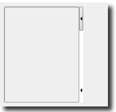

|  |
- This is a container that can be hidden or resized and its handles can face sideways, downwards or upwards.
- It is hidden or shown when the user clicks on one of the two small arrow buttons displayed on its border.
- It is resized when the users clicks on the border between the buttons, and moves the mouse.
|